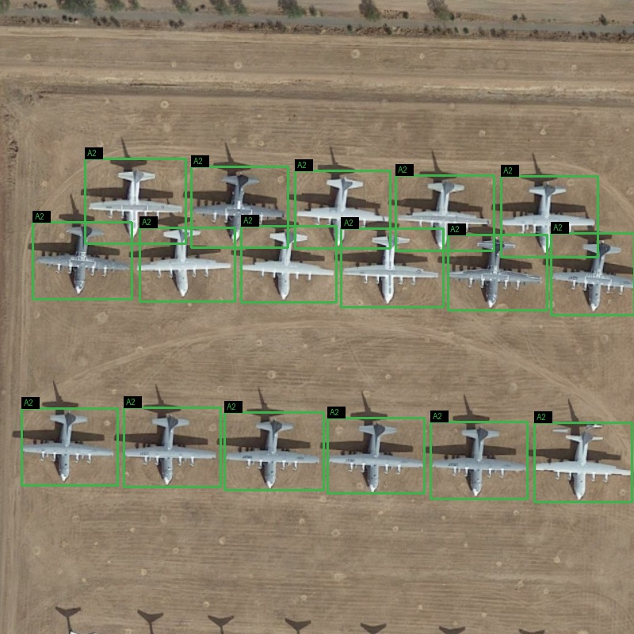
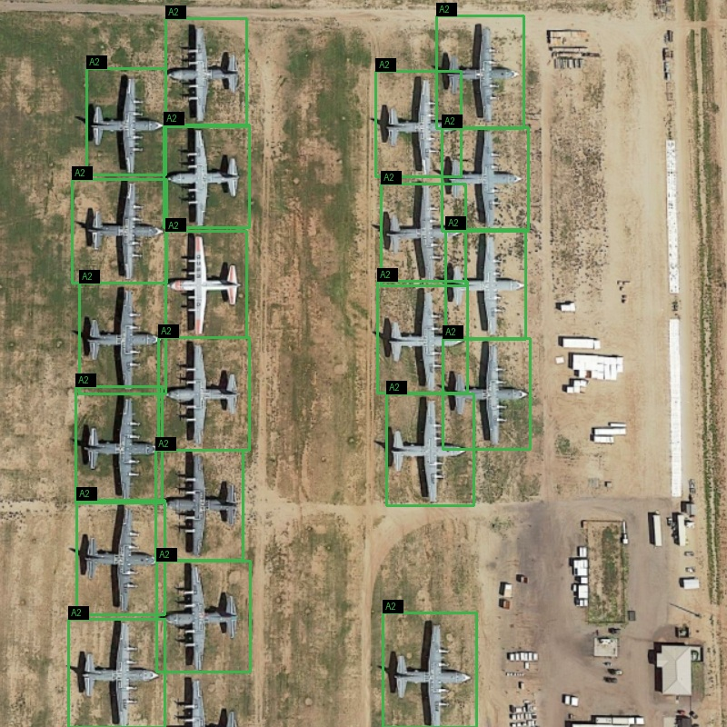
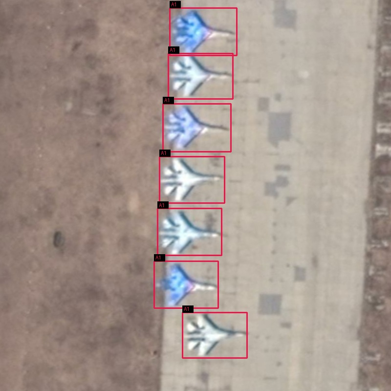
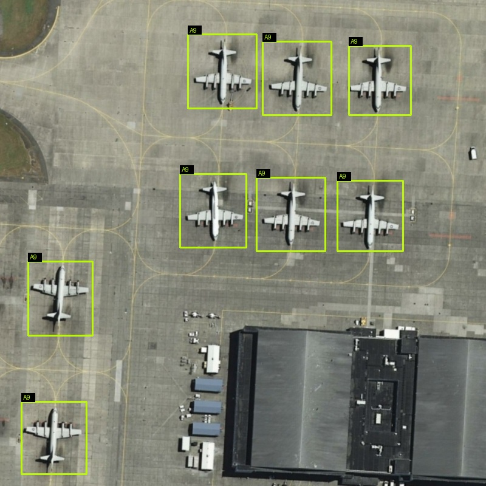
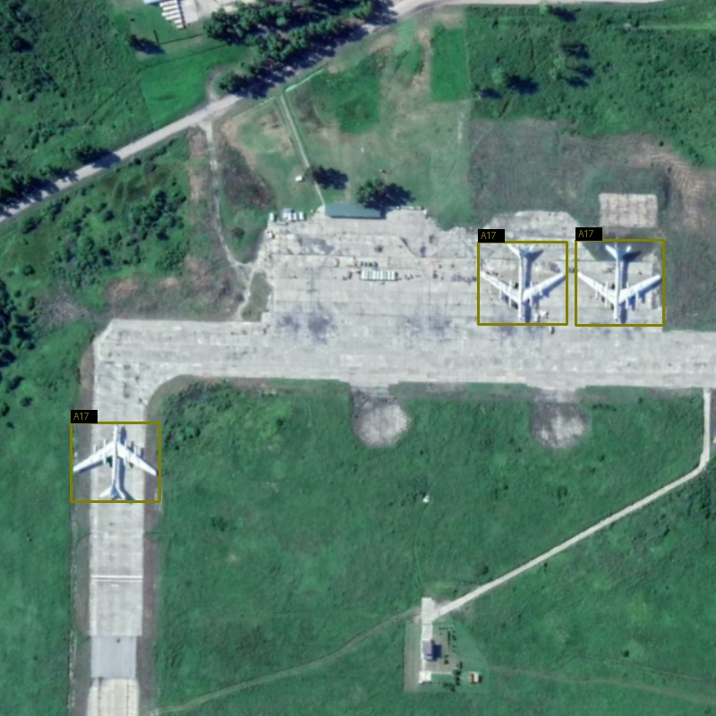
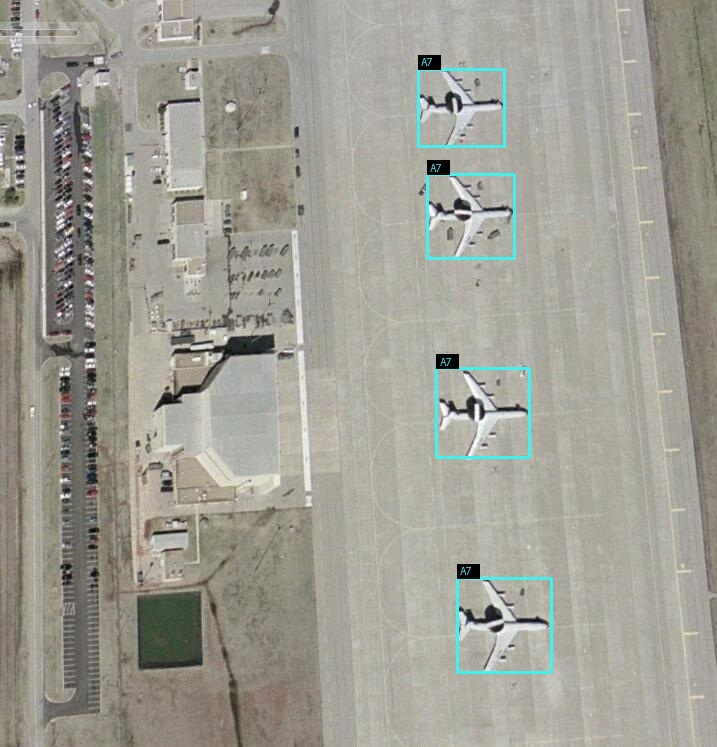
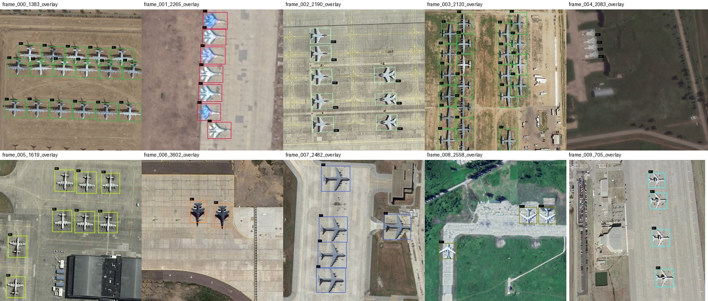

确定性抽样
固定种子 20260927，多标签缺额均衡分层抽样；清单记录顺序、类别与文件 SHA-256。
REMOTE SENSING · DATA ANNOTATION · QUALITY ASSURANCE
从公开数据抽样、官方 OBB 转换到 CVAT 复核与 YOLO-OBB 实时同步。一个可复现、可验证、可恢复的遥感标注工程案例。
作品范围：仅 CVAT Task #25；不包含其他任务、实验室服务器数据或私密凭据。

本项目从 MAR20 官方训练集确定性抽取 200 张影像，覆盖 A1–A20 全部类别。官方四顶点 OBB 经严格矩形门禁转换为 CVAT 旋转框，导入后进入人工复核、修正与质检流程。
这里展示的是官方标注导入 + 人工复核/修正 + 工程化质检，不是“200 张全部从零手工标注”。这一区分保证作品描述真实、可审计。
固定种子 20260927，多标签缺额均衡分层抽样；清单记录顺序、类别与文件 SHA-256。
不把斜框近似成水平框，不静默接受一般四边形；无法无损表示为旋转矩形的样本在创建前剔除。
图片卷只读，标签卷可写；同步服务每 3 秒把 CVAT 当前旋转框导出为 YOLO-OBB 文本。
CVAT 负责交互复核，独立同步器负责可读标签，Docker 命名卷负责持久化边界。
mar20_portfolio_images # CVAT read-only
mar20_portfolio_labels # synchronizer write
mar20_portfolio_metadata # evidence / manifests
mar20_portfolio_sync_state # last known task state可复现 — 固定抽样种子与完整清单。
可追溯 — 数据、转换、验证均有机器可读证据。
可恢复 — 原生任务备份与运行环境解耦保存。
最小暴露 — 公共仓库只含示例与复现材料。
创建前门禁、运行时核对、全量几何比较与可逆同步测试全部通过。
200 张原始影像均可从 CVAT 读取。
服务端对图片挂载的写入测试被系统拒绝。
官方四点 → 旋转框 → 四点，1,534 个实例逐一匹配。
0.125 px 临时编辑写入标签；随后恢复，CVAT 几何和标签哈希均回到原值。
条形长度表示本次 200 张样本中的实例数。抽样以图像为单位且允许一图多类，因此各类图像数之和可以大于 200。
1,534 total instances
正在读取类别分布…
以下均为 Task #25 的真实验证叠加图；仅公开少量样例，不公开完整影像集。






清单、统计与核心脚本进入 Git；完整 Task #25 备份作为校验锁定的 Release 资产保存，账号、Token 和本地路径永不上传。
MAR20 作者页面说明数据集包含 3,842 张图像、20 类和 22,341 个实例，采用 CC BY-NC 4.0。本项目用于非商业实习/求职展示。
引用：Wenqi Yu, Gong Cheng, Meijun Wang, Yanqing Yao, Xingxing Xie, Xiwen Yao, and Junwei Han. “MAR20: A Benchmark for Military Aircraft Recognition in Remote Sensing Images.” Journal of Remote Sensing (Chinese), 2022.
访问 MAR20 官方页面 ↗